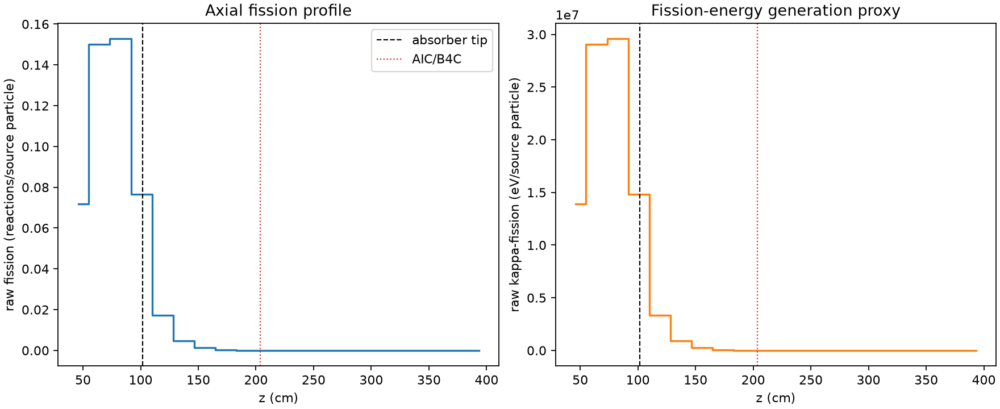
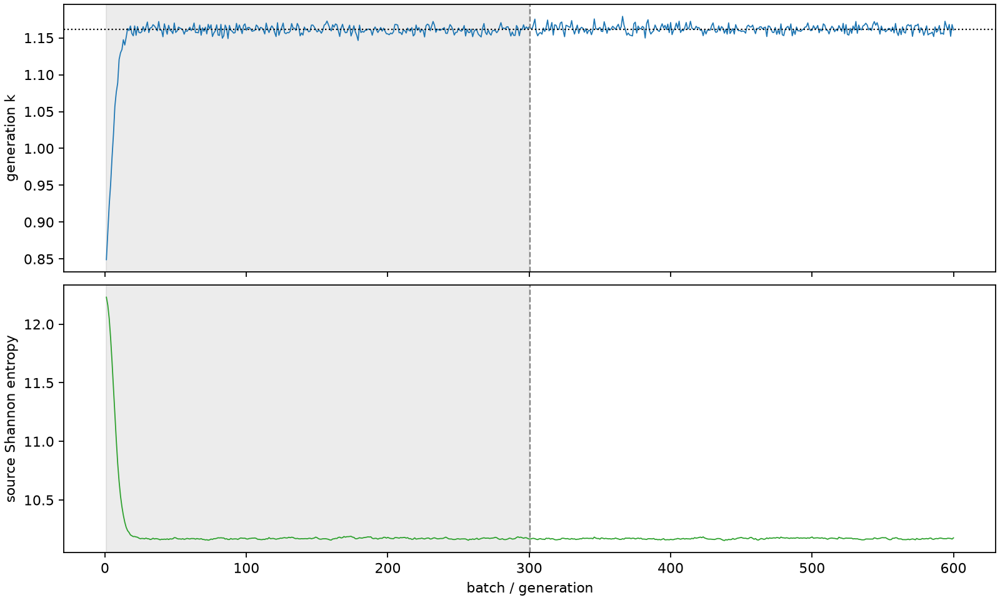

| field | value |
|---|---|
| experiment | V2-STAGE_256_OGRENCI_02-0027 |
| k | 1.1618548806701385 |
| MC standard error | 0.00017925520630003686 |
| seconds | 959.6586438719969 |
| acceptance | not_assessed |
| convergence | review_required |
Completed is output integrity only; physical and statistical review required. Zero tallies do not prove zero production or zero uncertainty.
| diagnostic | value |
|---|---|
| geometric fuel voxels | 5280 |
| zero fission tally voxels | 1821 |
| low signal fuel voxels | 2922 |
| low signal fission share | 6.920188279147348e-05 |
| low signal kappa share | 6.923268163963592e-05 |
| important fission share | 0.9501122234544368 |
| previous filter included | 2358 |
| duration estimate s | 1562.5173488400023 |
| actual minus estimate s | -602.8587049680054 |
| fission relative MC error | statistics |
|---|---|
| all_geometric_fuel | {"voxels": 5280, "positive_mean_voxels": 3459, "zero_mean_voxels": 1821, "undefined_relative_error_voxels": 1821, "median": 0.04627414614675608, "p95": 0.9999999999999999, "maximum": 1.0000000000000002} |
| low_signal | {"voxels": 2922, "positive_mean_voxels": 1101, "zero_mean_voxels": 1821, "undefined_relative_error_voxels": 1821, "median": 0.6320326071259023, "p95": 1.0, "maximum": 1.0000000000000002} |
| important_95pct | {"voxels": 1055, "positive_mean_voxels": 1055, "zero_mean_voxels": 0, "undefined_relative_error_voxels": 0, "median": 0.005470767064432948, "p95": 0.006747215300242696, "maximum": 0.008107584987714838} |
| outside_previous_filter | {"voxels": 2922, "positive_mean_voxels": 1101, "zero_mean_voxels": 1821, "undefined_relative_error_voxels": 1821, "median": 0.6320326071259023, "p95": 1.0, "maximum": 1.0000000000000002} |
| kappa_fission relative MC error | statistics |
|---|---|
| all_geometric_fuel | {"voxels": 5280, "positive_mean_voxels": 3459, "zero_mean_voxels": 1821, "undefined_relative_error_voxels": 1821, "median": 0.04620616074772556, "p95": 0.9999999999999999, "maximum": 1.0000000000000002} |
| low_signal | {"voxels": 2922, "positive_mean_voxels": 1101, "zero_mean_voxels": 1821, "undefined_relative_error_voxels": 1821, "median": 0.6316075330374525, "p95": 1.0, "maximum": 1.0000000000000002} |
| important_95pct | {"voxels": 1055, "positive_mean_voxels": 1055, "zero_mean_voxels": 0, "undefined_relative_error_voxels": 0, "median": 0.00546466613694413, "p95": 0.006739104967260643, "maximum": 0.008097001131759146} |
| outside_previous_filter | {"voxels": 2922, "positive_mean_voxels": 1101, "zero_mean_voxels": 1821, "undefined_relative_error_voxels": 1821, "median": 0.6316075330374525, "p95": 1.0, "maximum": 1.0000000000000002} |
| axial bin | fission share | kappa-fission share |
|---|---|---|
| 1 | 0.15120802893961305 | 0.15120934172323502 |
| 2 | 0.31627477128354853 | 0.31626238111632987 |
| 3 | 0.3220082023725883 | 0.32199583258758707 |
| 4 | 0.16115409736620911 | 0.16116171663304657 |
| 5 | 0.03610143417967784 | 0.03611285909669348 |
| 6 | 0.009691796309936445 | 0.009695009375236067 |
| 7 | 0.0026130278492256793 | 0.002613893405750218 |
| 8 | 0.0007115557244199213 | 0.0007117823050687959 |
| 9 | 0.00018006314038826758 | 0.00018013355907645643 |
| 10 | 4.288834654943974e-05 | 4.290878873063132e-05 |
| 11 | 1.039919057223169e-05 | 1.0403505535575948e-05 |
| 12 | 2.7894596738961213e-06 | 2.7915151551948615e-06 |
| 13 | 6.664542241127039e-07 | 6.668833668507921e-07 |
| 14 | 1.4516664169197315e-07 | 1.4515297516270287e-07 |
| 15 | 1.3421673145450305e-07 | 1.3435221300599868e-07 |
| 16 | 0.0 | 0.0 |
| 17 | 0.0 | 0.0 |
| 18 | 0.0 | 0.0 |
| 19 | 0.0 | 0.0 |
| 20 | 0.0 | 0.0 |
Histories include the inactive-to-active transition at batch 300. kappa-fission approximates fission energy production, not total heat deposition.

